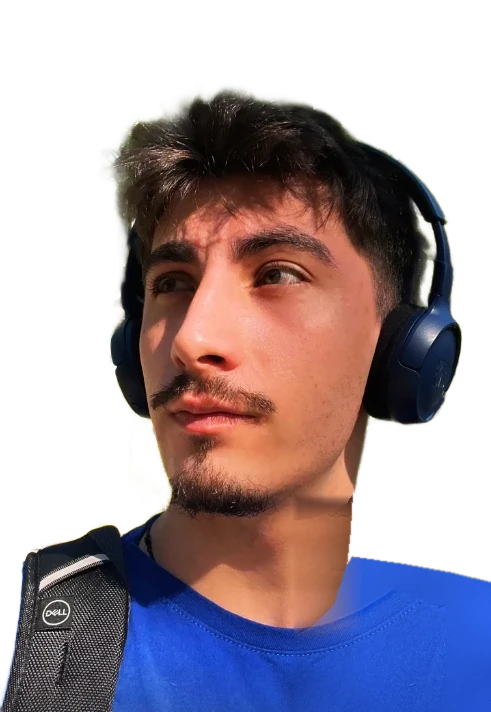
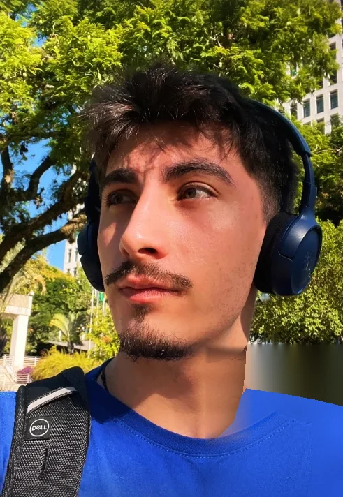
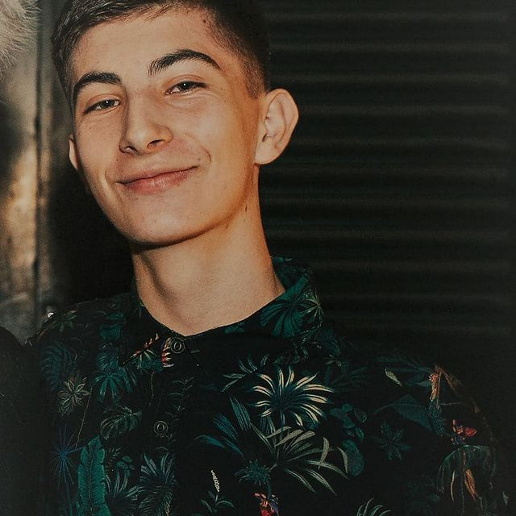

modelo raul-rotilli-aguirre · em treinamento contínuo
Raul Rotilli
Aguirre
Desenvolvedor em formação com foco em Inteligência Artificial e Machine Learning, construído sobre uma base sólida de back-end.
Este portfólio é, ele mesmo, um experimento: o retrato ao lado nasce do ruído, como em um modelo de difusão. Mais abaixo, oito algoritmos de IA e visão computacional transformam meu rosto em arte, ao vivo, no seu navegador.

01 Sobre mim
Um dev aprendendo a ensinar máquinas.
Olá! Meu nome é Raul Rotilli Aguirre e sou apaixonado por programação. Tudo começou com o Curso Técnico em Informática, que me despertou para o mundo da TI. Desde então, estou determinado a me tornar um grande desenvolvedor de software.
O programa Nova Geração do Instituto Caldeira foi um divisor de águas: foi ali que redescobri minha paixão pela programação. A convivência com pessoas incríveis e talentosas enriqueceu meu conhecimento e me proporcionou um crescimento significativo em todos os aspectos da vida.
Comecei pelo back-end, com Java e Spring, e agora direciono meus estudos para Inteligência Artificial e Machine Learning: dados, modelos que aprendem e produtos inteligentes que resolvem problemas reais.


02 Galeria neural
Oito retratos. Um só rosto.
Cada obra é gerada em tempo real a partir da minha foto por um algoritmo clássico de IA, visão computacional ou álgebra linear. Mexa nos parâmetros, segure para comparar com o original e baixe a sua favorita.
03 Lab
Uma rede neural treinando na sua frente.
Sem bibliotecas: forward pass, backpropagation e descida do gradiente escritos do zero em JavaScript. Escolha um dataset, ajuste a arquitetura e veja a fronteira de decisão se formar.
Corrida de otimizadores
SGD, Momentum, RMSProp e Adam descendo a mesma superfície de perda. Clique no mapa para escolher o ponto de partida.
04 RaulGPT
Pergunte qualquer coisa sobre mim.
Um mini RAG que roda 100% no seu navegador, sem API: sua pergunta vira um vetor TF-IDF, a similaridade de cosseno encontra os trechos mais relevantes da minha base de conhecimento e a resposta é montada a partir deles.
05 Trajetória
Log de treinamento: a perda só cai.
Experiências e estudos registrados como épocas de treino. Cada etapa reduziu um pouco o erro e me aproximou do objetivo.
-
Curso Técnico em Informática
Senac Tech
A porta de entrada para o mundo da TI: fundamentos de computação, redes e lógica de programação.
-
Estagiário de TI
Metha Informática Ltda
Manutenção de hardware e software no dia a dia de clientes reais.
-
Estagiário de TI
Secretaria Municipal de Cultura de Porto Alegre
Administração do setor de informática local, abertura de ordens de serviço de manutenção de hardware e software e execução das manutenções necessárias.
-
Programa Nova Geração
Instituto Caldeira
Três meses de networking, treinamento de soft skills e formação em programação pela Alura, incluindo a trilha de programação do Instituto Caldeira e o curso Comunicação assertiva: reduzindo conflitos e frustrações.
-
Foco em IA & Machine Learning
Treinamento contínuo
Python, ciência de dados, redes neurais e LLMs, aplicando a base de back-end para levar modelos do notebook para a produção.
Espaço de embeddings das minhas habilidades
Habilidades parecidas ficam próximas no espaço vetorial. Passe o mouse (ou toque) para explorar os vizinhos mais próximos.
06 Contato
Vamos treinar algo juntos?
Estou aberto a oportunidades, projetos e boas conversas sobre IA, dados e desenvolvimento.
raul@ai:~$ python deploy.py --oportunidade "sua-empresa"
# aguardando o seu contato…